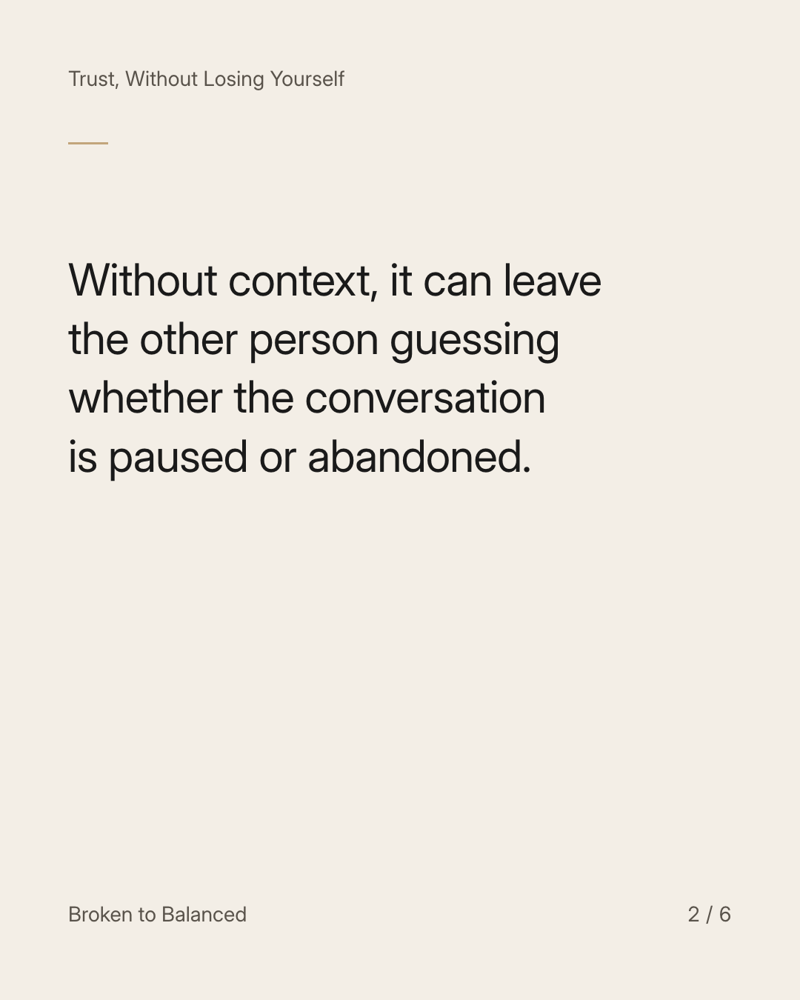
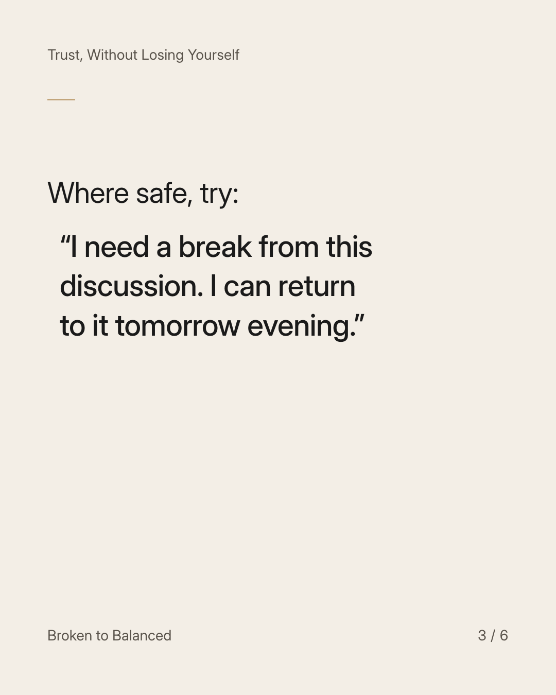
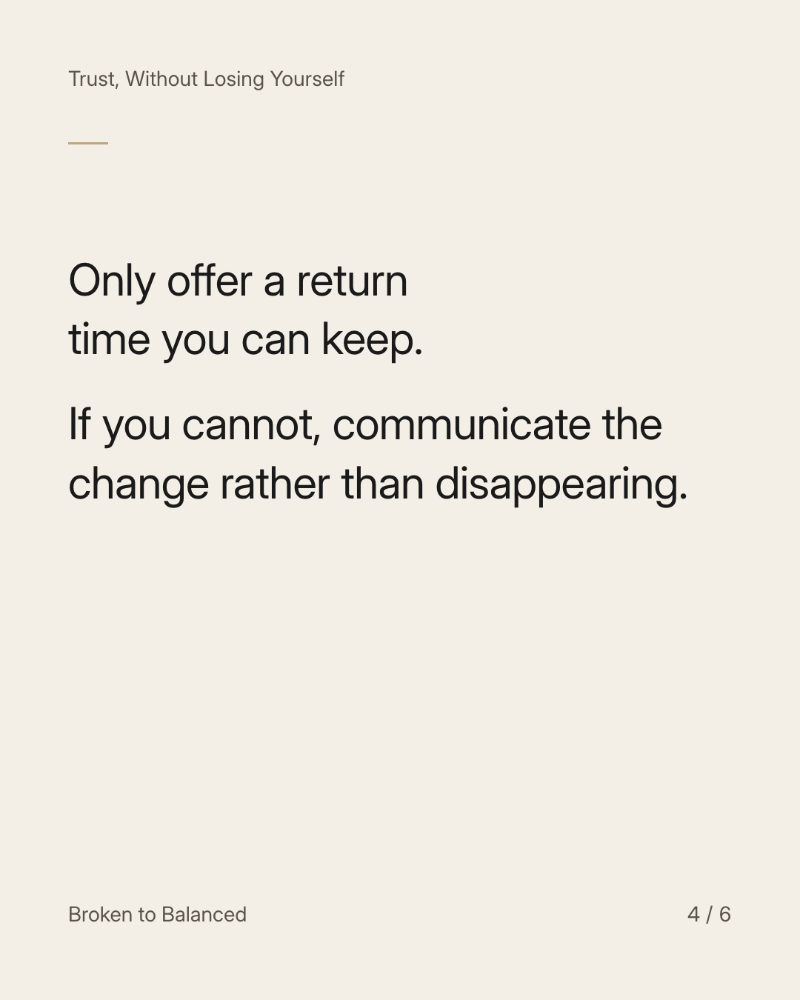
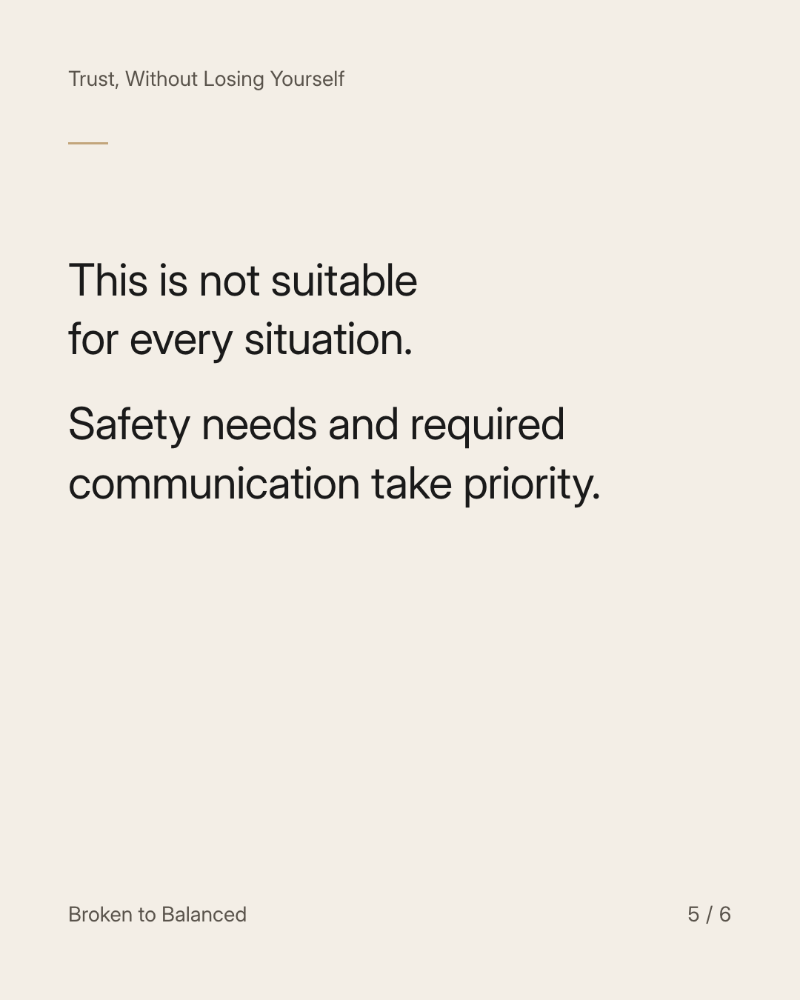
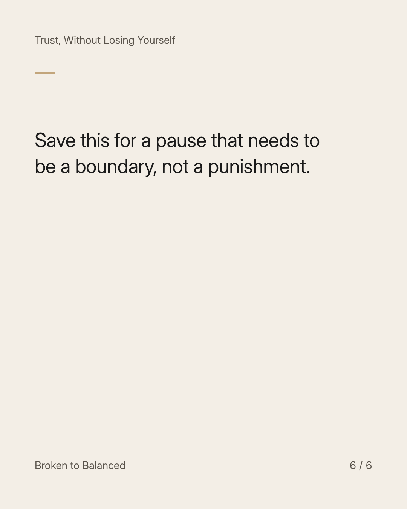

Exact text and accessibility text
“I need some space” works better with a little clarity.
Slide 1 of 6. “I need some space” works better with a little clarity.


Exact text and accessibility text
Without context, it can leave the other person guessing whether the conversation is paused or abandoned.
Slide 2 of 6. Without context, it can leave the other person guessing whether the conversation is paused or abandoned.


Exact text and accessibility text
Where safe, try: “I need a break from this discussion. I can return to it tomorrow evening.”
Slide 3 of 6. Where safe, try: “I need a break from this discussion. I can return to it tomorrow evening.”


Exact text and accessibility text
Only offer a return time you can keep. If you cannot, communicate the change rather than disappearing.
Slide 4 of 6. Only offer a return time you can keep. If you cannot, communicate the change rather than disappearing.


Exact text and accessibility text
This is not suitable for every situation. Safety needs and required communication take priority.
Slide 5 of 6. This is not suitable for every situation. Safety needs and required communication take priority.


Exact text and accessibility text
Save this for a pause that needs to be a boundary, not a punishment.
Slide 6 of 6. Save this for a pause that needs to be a boundary, not a punishment.
Exact caption
Plain-text fallback: select and copy the caption.